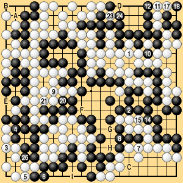

|
| * |
Under area rules II and territory rules III White wins by one point as in Dias. 6-1-1 to 6-1-4. Under area rules III and territory rules I, however, White can win by two points by leaving the ko unconnected. Reference Diagram 2 shows one possible sequence.
|  |
Reference Diagram 2 (1-26)
ko: 13, 16, 19, 22, 25. pass: 27 |
|---|
|
Black has just three ko threats left at A, B, and C. White has five ko threats at D to H and two more at I, so he is in no danger of losing the ko. Under area rules III White gets an extra point for making the first pass. Under territory rules I White can leave the ko open and claim a point of territory at 10, or connect the ko after the preliminary end and receive a stone from Black.
This illustrates the point that by rewarding the player who passes first, territory rules I and area rules III introduce a factor of skill that is missing from both traditional territory rules and traditional area rules.
|
|